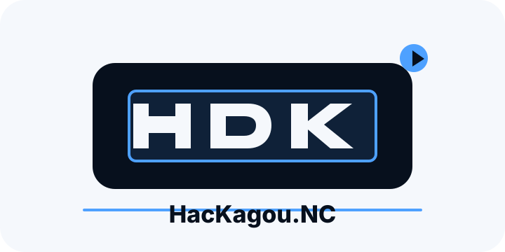
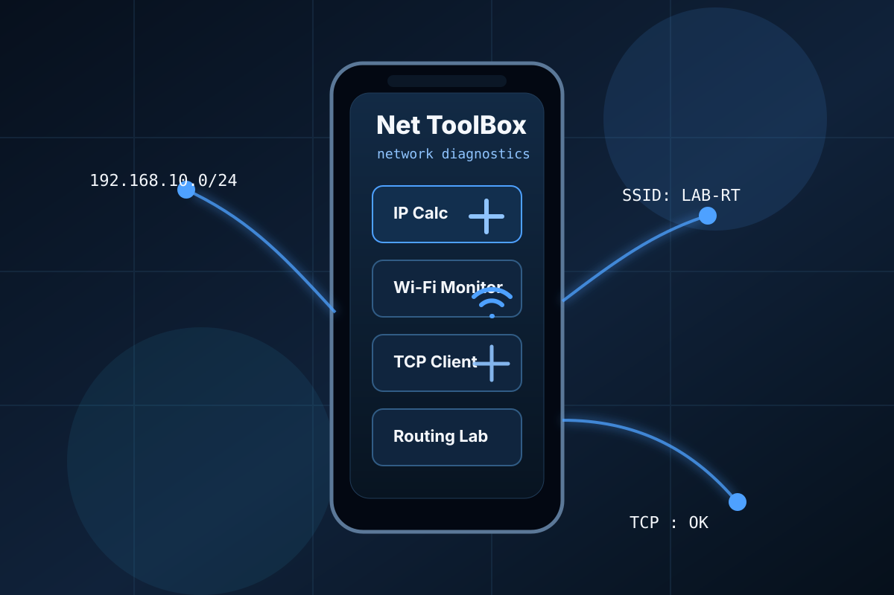

Cybersécurité & Système
HacKagou.NC
Concours de cybersécurité en équipe avec recherche de chaînes cachées, scripts Bash et outils de scan.
Réalisations
Des projets de formation et personnels présentés avec la structure attendue : contexte, objectif, travail réalisé et résultat quand le projet est terminé.


Concours de cybersécurité en équipe avec recherche de chaînes cachées, scripts Bash et outils de scan.

Carte interactive imaginée pour partager rapidement des informations locales en Nouvelle-Calédonie.

Site personnel responsive pour présenter mon profil BUT RT, mes compétences, mes projets et mon objectif de stage.

Projet d'application mobile regroupant des outils de diagnostic réseau utilisables sur smartphone.

Audit de sécurité web autour d'une application PHP/MySQL volontairement vulnérable puis corrigée.

Projet en cours. Le contenu sera complété lorsque le travail sera finalisé.
GitHub